正文共计7200字左右
预计阅读时间10min
在去年的威尼斯电影节中。
有一部被提名最佳公映纪录片的电影吸引了我的注意。
这部电影是《塔尔科夫斯基：在电影中祈祷》。
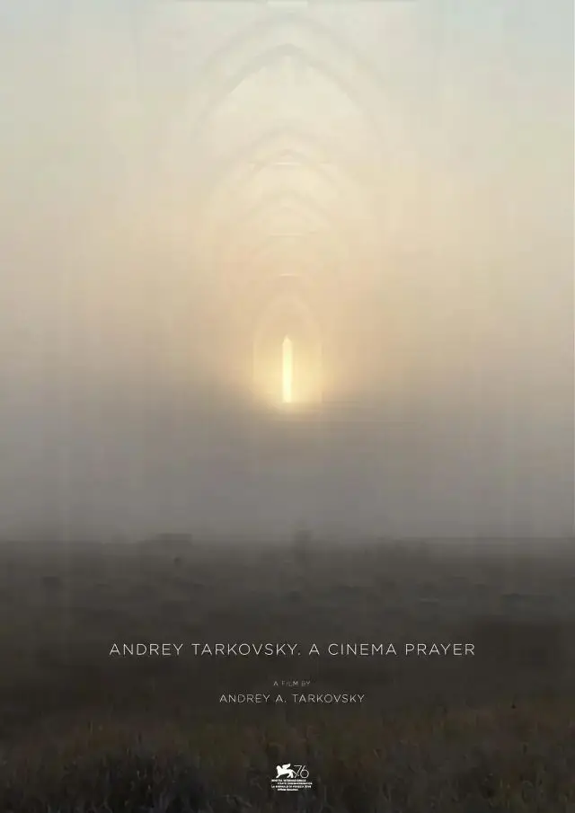
塔尔科夫斯基作为电影史上的一座高山，关于他的纪录片并不少。
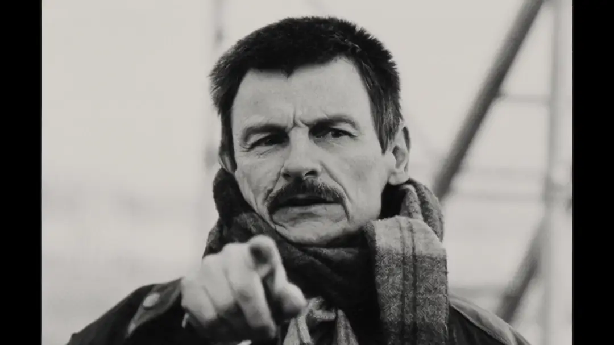
有人痴迷于老塔的场面调度。
有人陶醉于老塔作品中的诗意。
更多人则迷失在“七部半”中感到大惑不解。
而《塔尔科夫斯基：在电影中祈祷》可以说是塔氏祖孙三代的自传。
诗人祖父阿尔谢尼的诗作穿插其中。
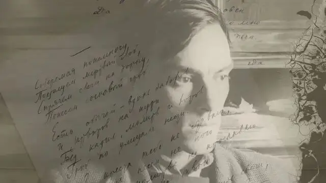
老塔的自述是本片的内容主体。
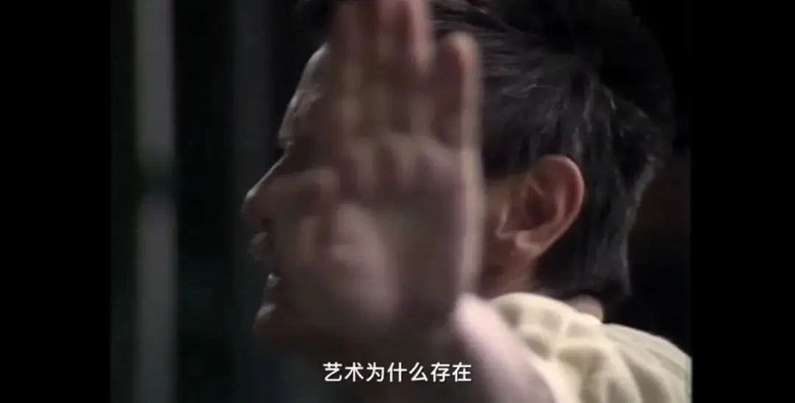
而整部作品的内容呈现是由老塔的儿子精心编排。
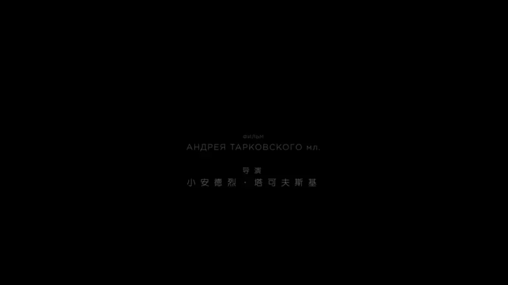
小塔尔科夫斯基说：「我期盼引领观众一窥其创作源头，分享我与他互动时的感受。他是伟大的艺术家、伟大的人，也是我的人生导师。他是我的父亲。」
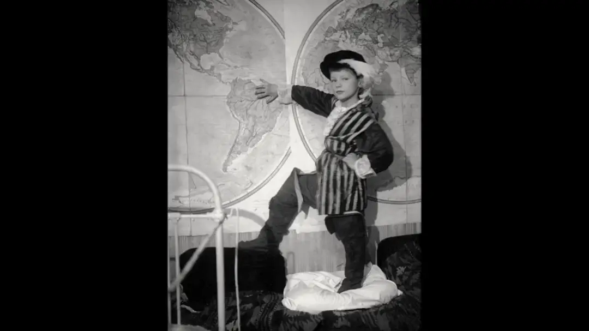
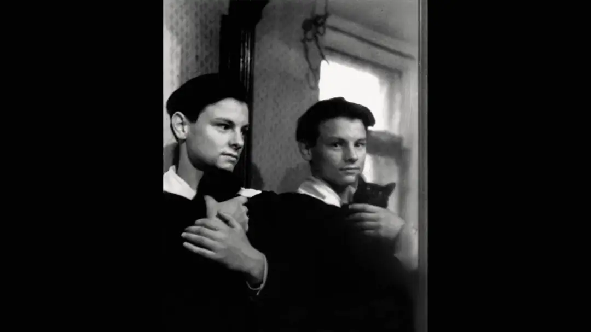
所以，我对这部作品是怀有极大期待的。
第一是可以透过老塔儿子的眼睛更深地了解老塔和他的作品。
第二是为老塔自己感到高兴。
塔尔科夫斯基最后一部作品叫做《牺牲》，这部电影描述了第三次世界大战即将爆发下的绝望气息。
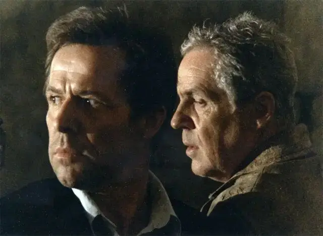
在没有希望的未来，大人们焦虑、绝望，而电影中的小男孩却一直安安静静地为他和父亲共同栽种的树苗浇水。
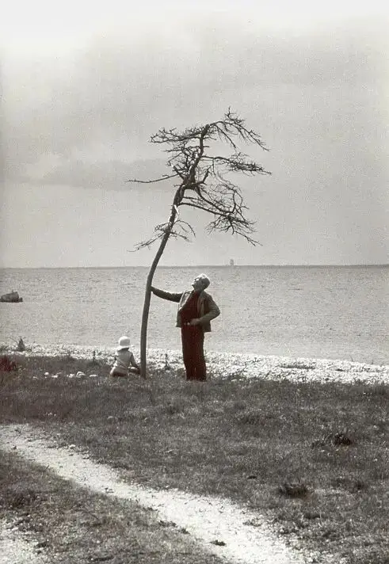
这部作品既表达了塔尔科夫斯基的信仰，更是老塔献给儿子的礼物。
老塔希望儿子就像那颗被浇灌的树一样，走向重生和希望。
所以，当看到小塔尔科夫斯基在电影节的出现，我想这颗被浇灌的树长大了。
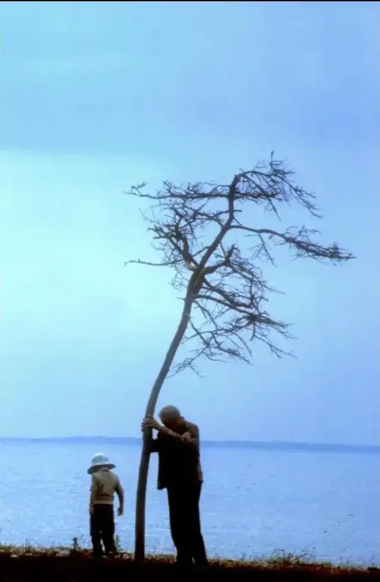
今年，电影资源终于出炉（感谢奇遇电影字幕组）。
这部作品远超过我自己的期待，可以说是我毕业以来最重要的一部作品。
因为这部电影不仅激活了我对塔氏作品的理解。
更重要的是，这部电影较为完整地阐述了塔尔科夫斯基对于艺术的理解和思考，解答了我一直以来对于当代艺术的一些困惑和不解。
不论是柏拉图、亚里士多德，还是大卫.休谟、康德和叔本华，亦或者尼采、弗洛伊德和海德格尔......
塔尔科夫斯的艺术理论要比以往任何一个人更让我震撼，更让我着迷。
他带给我的不仅是答疑解惑，更是一剂加固我信心和平安的良剂。
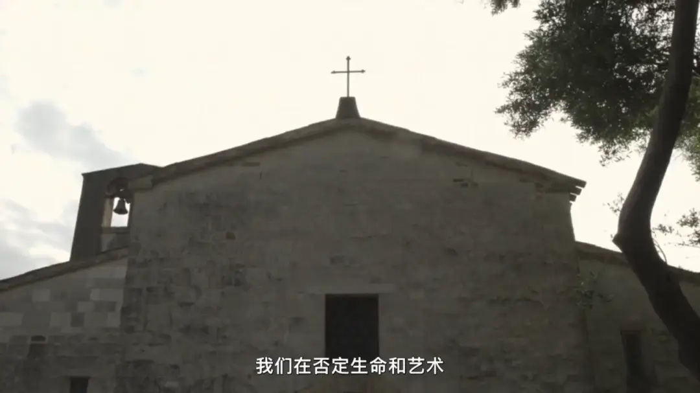
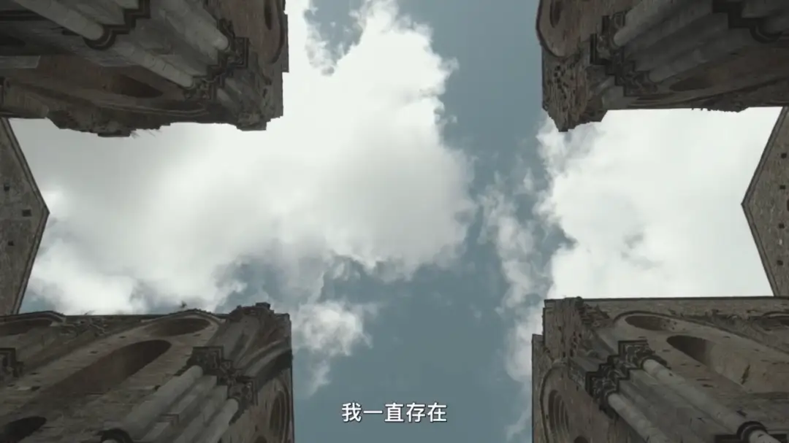
-01- 什么是艺术
关于艺术。
如果你置身于梵蒂冈西斯廷教堂，你一定会被米开朗基罗的《创世纪》所震撼。
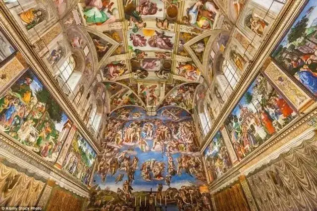
如果你穿越到1917年纽约中央大厦举办的艺术展览现场，当你看着大名鼎鼎的马塞尔·杜尚提着从商店购买的小便池要参展时。
你可能会被惊呆下巴，不会吧？这是艺术？
亦或者，当你来到1964年4月纽约曼哈顿第74东大街的斯特堡画廊，面对一堆在超市经常看到的包装盒时，你可能会很费解，这是艺术么。
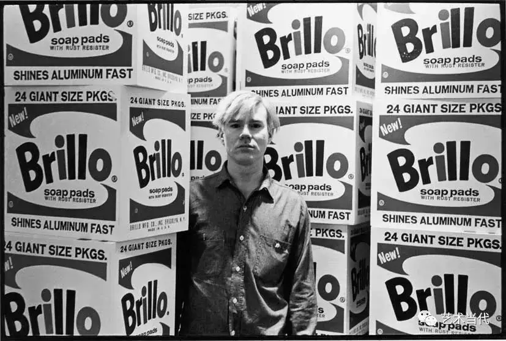
当你知道这是安迪.沃霍尔的作品，并会在拍卖会上拍出了84万美元一个的天价时，你会觉得贵圈越来越让人难以理解.....
不知道你自己提个小便池，带几个包装盒，能不能成为伟大的当代艺术家。
事实上，这也成为艺术界一再争论的问题。
面对这样的挑战，阿瑟.丹托最早做出回应，他认为艺术之所以是艺术，与艺术理论和艺术界有关。
也就是，如果一个作品能够通过某种艺术理论和主张，能在艺术史上占有一席之地，那他就是艺术。
如果大众事前对艺术史、艺术理论、艺术界没有很清楚的理解，那么，我们就不会把安迪.沃霍尔的包装盒看做是艺术。
后来，受阿瑟.丹托启发，乔治.狄基更直接地提出，艺术之所以是艺术，关键在于艺术界核心成员对其的鉴定。
所以，杜尚签名的小便池是艺术，而你的小便池就不是，只是因为你并不是艺术家。
当代艺术遇到的尴尬还有很多，关于艺术的鉴定也在不停的变化，艺术即文化生产、艺术即女权主义、艺术即假扮......
不论如何，当代艺术在很大程度上远离和超出了大众的常规认知，越来越成为艺术圈内部的颅内高潮。
当代艺术也不再以一种整全、庄严、具有极高审美趣味的面貌出现。
而是以一种碎片化、戏谑化、私密化、更加实用的方式出现。
艺术家任何一种体验，任何一种突发奇想，都可以以任何一种形式成为一种新艺术。
当代艺术彻底从宗教中解放出来，不停地在政治、社会、经济中穿插，尤其是边缘群体权力争取中尝试找到自己的位置。
而这些艺术观念和表达方式的变化，也伴随着百年电影史的发展，我们在无数的电影里感受着现代社会的破碎，经历着巨大虚无，迷失在各种看似新奇却是深不见底的灰暗中。
而这些感受也是我自己作为一个影迷长期以来的困惑：在光影的世界中我看到了无限的可能，获得了几十倍于先人的感知经验，但尽管如此，电影作为人类现实世界的投射，电影依旧给不了我光明和出路。
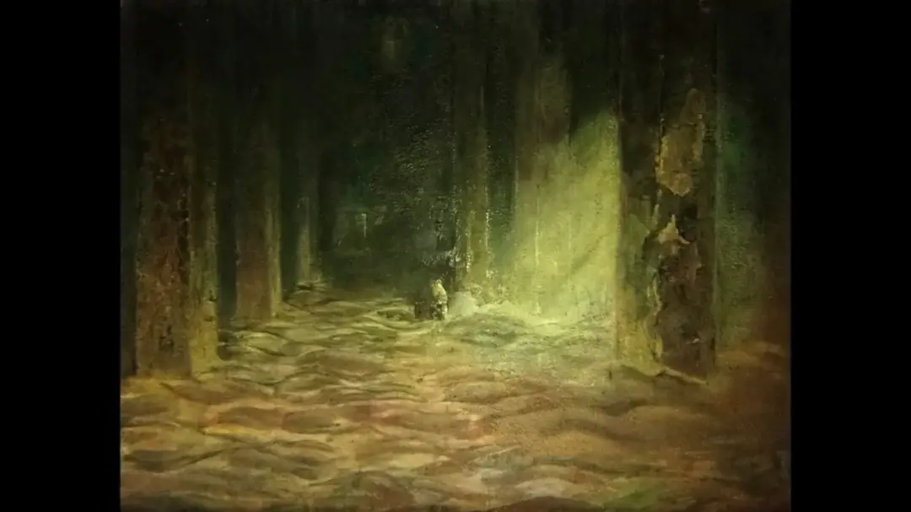
而在本片中，塔尔科夫斯基为当代艺术开出了一剂良药：艺术即祈祷。
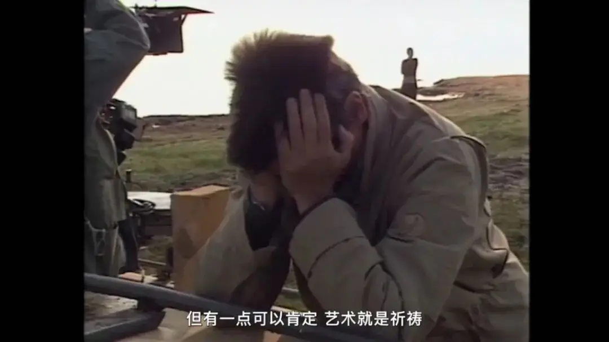
△塔尔科夫斯基在拍摄现场祈祷
老塔认为艺术中最重要的是艺术背后的精神性。
如果一个人对自己生命的意义没有思考，不会问自己为何活着，自己将去向何处，那这样的人根本算不上艺术家。
“因为他不够诚实，他回避了人之所以为人的最重要的问题！”
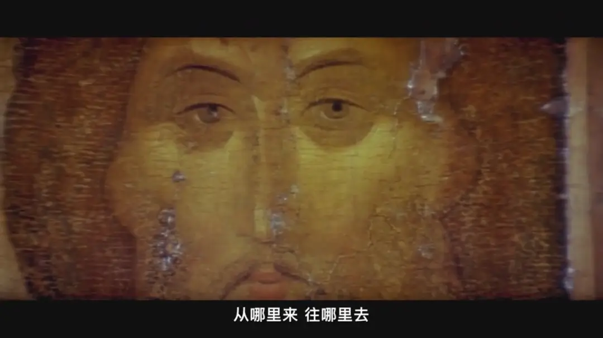
所以，在老塔看来，西方艺术中的一些倒退无疑是因为大家丧失了对生命意义的追问和兴趣。
而当我们开始思考这些问题时，真正的艺术才会出现。
对于老塔而言，他认为生命的意义在于知晓自己的信仰，明白自己的本源。
“人类的精神性无法离开宗教而独立发展，如果我们漠视宗教信仰，漠视造物主，艺术便会从社会中消失，因为我们再也找不到精神上的寄托。
人类将失去目标，不明白活着为了什么。”
所以，老塔认为宗教信仰是人类精神性的核心，艺术的本质在于祈祷，在于创作者一手触碰着大地 ，一手触碰着另一个超凡的世界。

因此，信仰缺失的问题在老塔看来是最重要紧迫的问题，信仰并不仅仅关乎个人，它关乎我们的文化乃至整个文明的命运。
如果这个世界上最后一位相信造物主的人类去世，人类文明便会走到尽头。
我们的文明不再有任何精神性，我们不再相信人类灵魂能够永生，人类只不过是一个动物群而已！
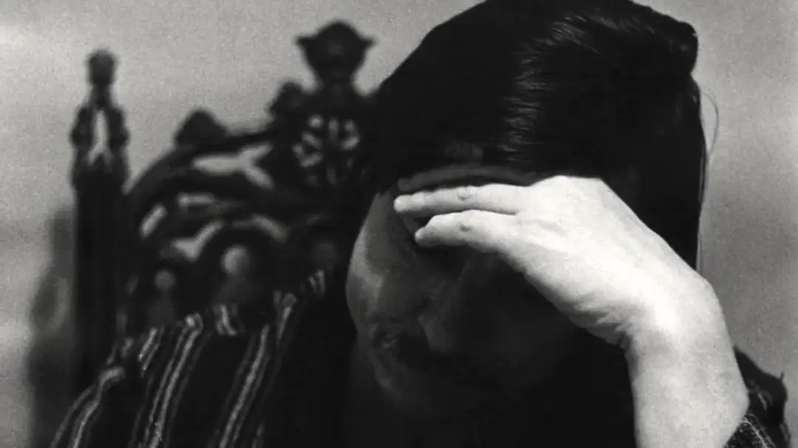
-02- 塔尔科夫斯基的祈祷
塔尔科夫斯基关于艺术的看法令我激动。
本片并非生硬地直接呈现老塔的艺术哲学，而是通过他的童年、家庭、日常生活以及艺术作品，进行了丰富生动的阐释。
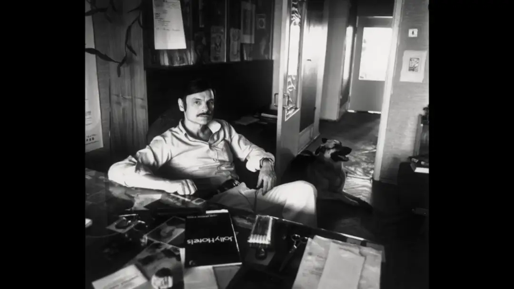
老塔艺术观念的源泉是他的父母以及俄罗斯深厚的东正教信仰。
他在纪录片中坦言：艺术家能从他的童年汲取源源不断的灵感，他的童年决定了他的艺术会是什么样子，我的诗人父亲对我产生了极大的影响。
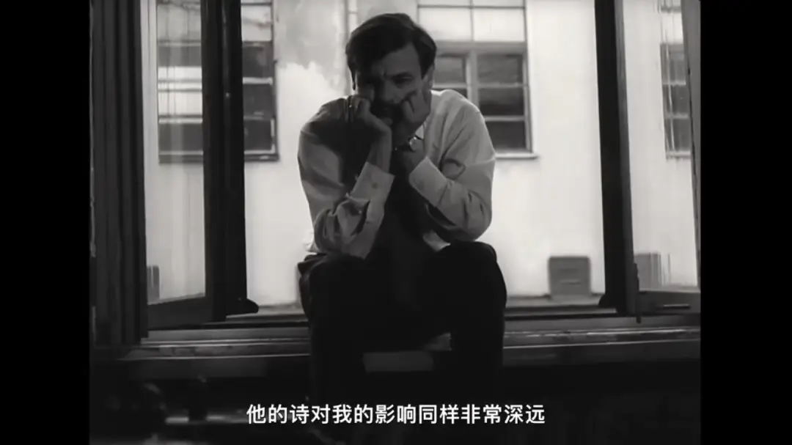
塔尔科夫斯父亲的诗作感性细腻，同时蕴含着极大的东正教思想。
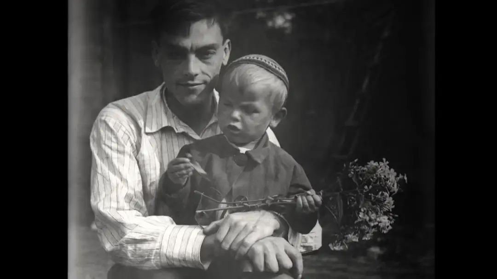
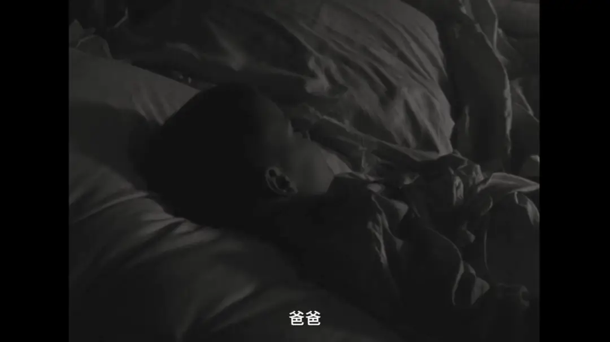
比如以下这首诗中，作为一名父亲，他在孩子面前并不是以一种伟光正的形象出现，而是坦诚相待，你的父亲也不过是一个堕落的罪人：
别信我 可怜的孩子 我在撒谎
我会像罪人般失控
可我无法越过疏离
无法用你的翅膀飞翔
无法用你的手指触碰你的双眼
无法用你的眼睛观察
你的坚强百倍于我
你是一首诉说着你自己的歌谣
而我守护着树木和上天
被你问罪
因为那首歌谣
再比如下面这首诗作，既凝练地表达了人之经历的复杂，同时也透过信仰传达着一种平静和安息
在时空中
我们将双手置于高处
我们会明白至高无上的皇冠上
镶嵌着贫穷的宝贵星辰
贫穷、虚荣以及忧虑
关于我们痛苦的生计
以及陌生的星座 夙怨
在我们的故土 我们就此安顿
比起父亲，老塔与母亲之间的关系要更加亲密，母亲没有父亲那样的浪漫和才华，但她的身上却闪现着爱的伟大。
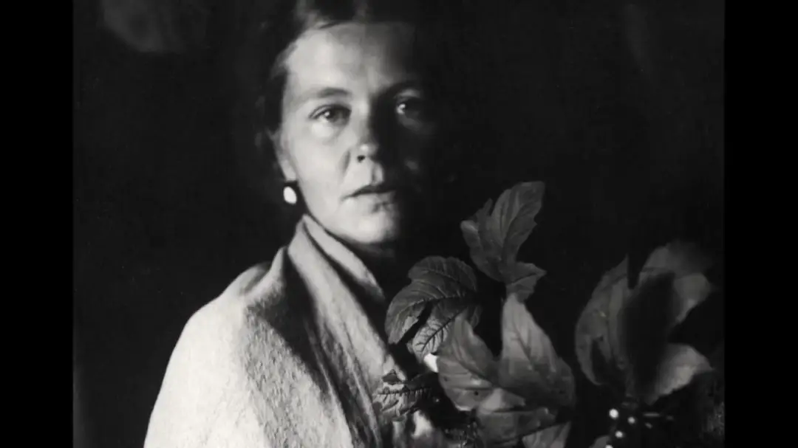
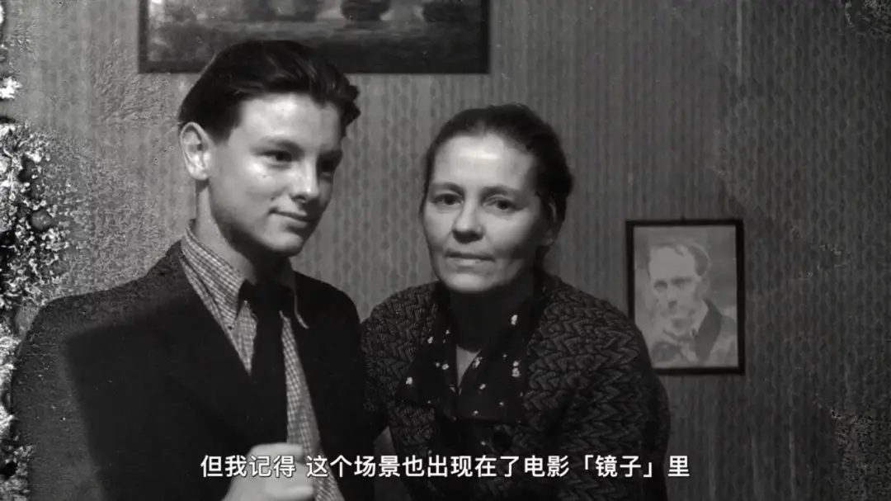
在父亲服兵役的时候，母亲一个人带着老塔和他的妹妹生活。
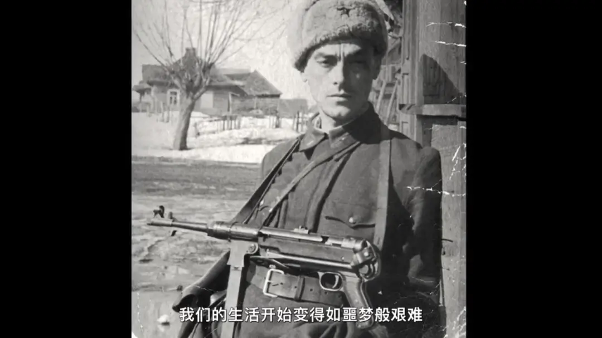
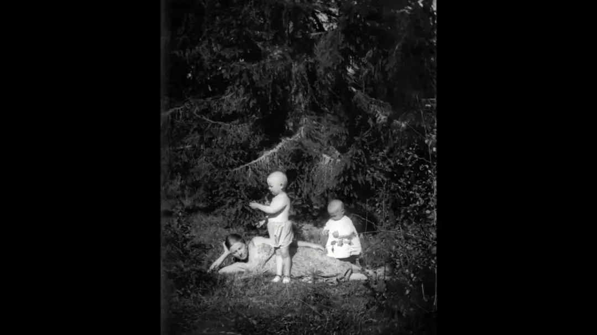
在那样艰难的岁月里，他们不仅有着快乐的童年，母亲还想尽一切办法让老塔接受的良好的艺术教育。
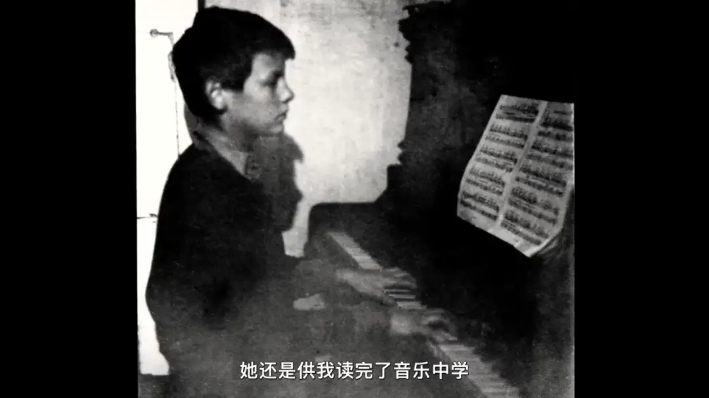
在求学生涯中，莎士比亚、达芬奇、巴赫、陀思妥耶夫斯成为了塔尔科夫斯基融入灵魂深处的影子。
除了父母和教育的影响，对老塔影响非常深的俄罗斯的大自然，俄罗斯人自小就非常亲近大自然，而大自然对于一个小孩性格上的影响和塑造是难以言明的。
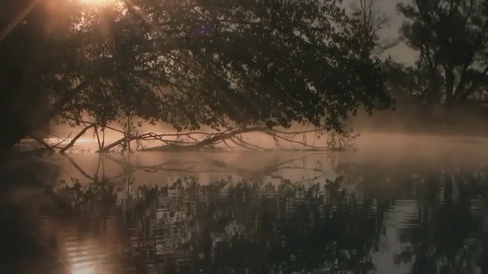
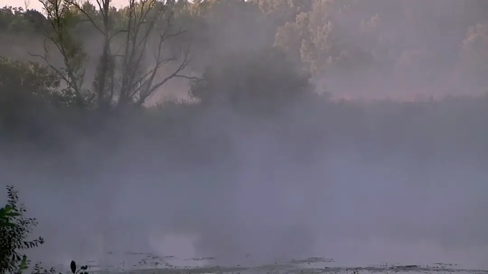
大自然作为造物主的无字天书，在塔尔科夫斯基的作品中占有非常重要的位置，他在纪录片中坦言：
我们把自然排除在了电影外，仿佛它毫无用处，而且我们完全排除了他，将自己视为主体。
但我们不是主体，我们依附于自然，自然远比我们重要，这就是为什么我认为忽然自然从情感上和艺术的感知上来说，都是罪恶的。
这不仅仅是罪恶的，还是愚蠢的，因为自然是唯一一处有真理在等待我们的地方。
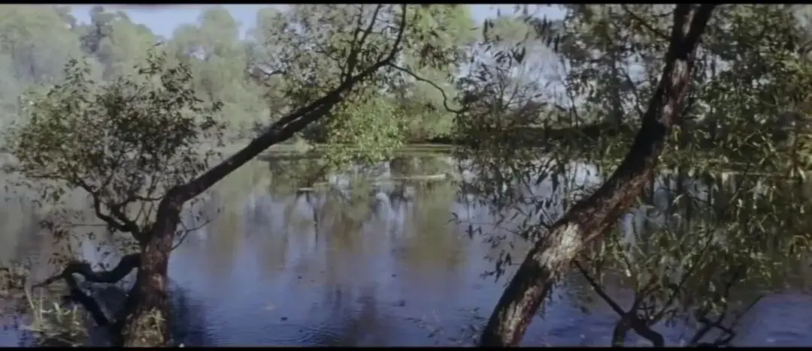
童年的经历，再加上塔尔科夫斯基对于艺术的执著追求和思考，让艺术即祈祷有着极丰富的内涵和表现。
首先，是自傲的消失。
所谓自傲，即强烈的自我意识，很想要通过作品来标榜和表现自己。
有些电影，我们隔着屏幕都能感受到主创在炫技。
而在塔尔科夫斯基的作品中，我们感受不到这份骄傲，塔尔科夫斯基就像米开朗基罗和《安德烈·卢布列夫 》中的圣像画家，他从未考虑自己是一个画家，一个电影导演，还是一个艺术家。
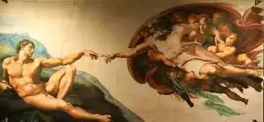
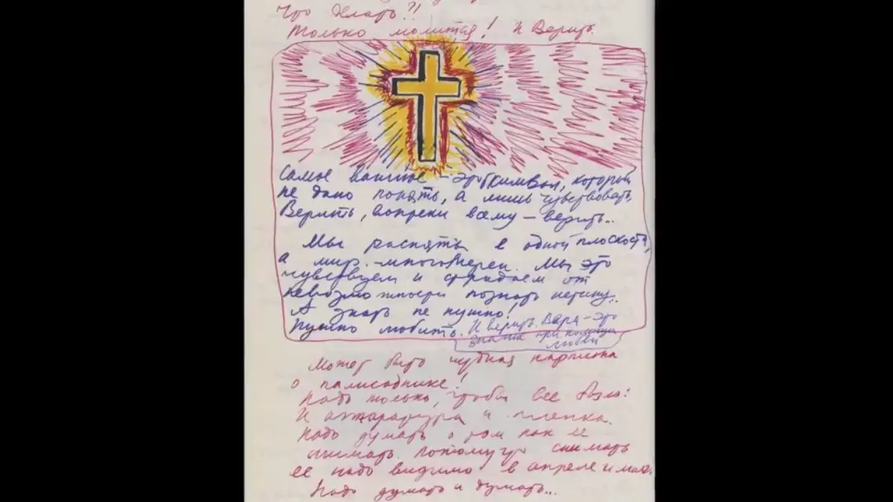
在他心中，他是用自己的天赋，用自己的专业来服侍上帝，这是他存在的全部意义。
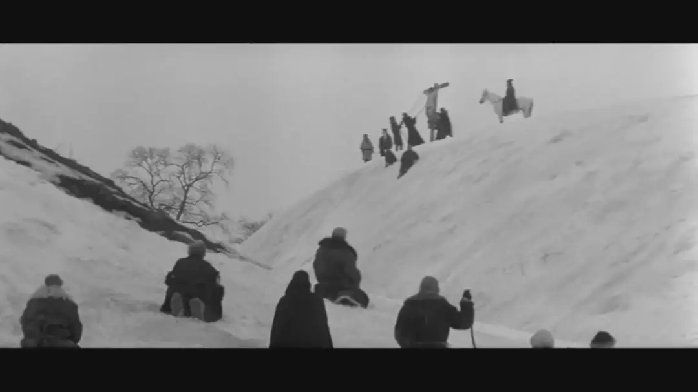
塔尔科夫斯基说：当你双膝跪地，并向上帝倾诉，荣耀便在你身上产生，真正的影像也是这样产生的。
因此，塔尔科夫斯基的每一部作品，都是他对上帝的祈祷，这种祈祷铸就了老塔影像里的诗意。
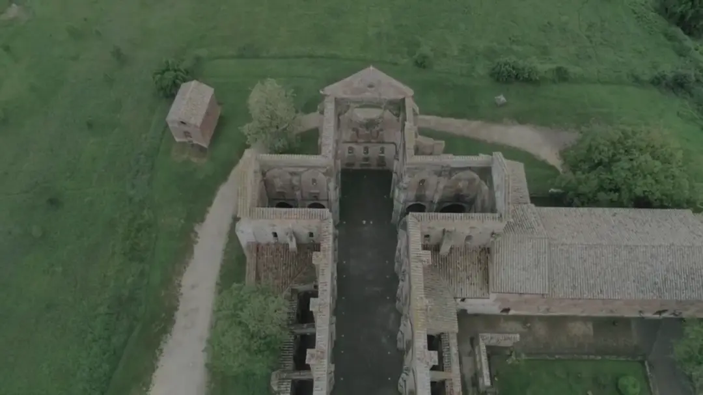
也正因为他的作品中充满着对上帝全知全能的默想，这也注定了老塔作品的深邃和神秘，因为作为造物，我们只是人，我们不可能完全认识造物主。
所以，塔尔科夫斯认为最崇高而诗意的影像也是无法被解读的，这是作为一个信仰者的智慧和谦卑，他能够将人的理性放在恰当的位置。
而现在有非常多的人过于笃信理性，甚至新教也深受毒害，总有一种想要解读和掌控一切的狂妄和骄傲。
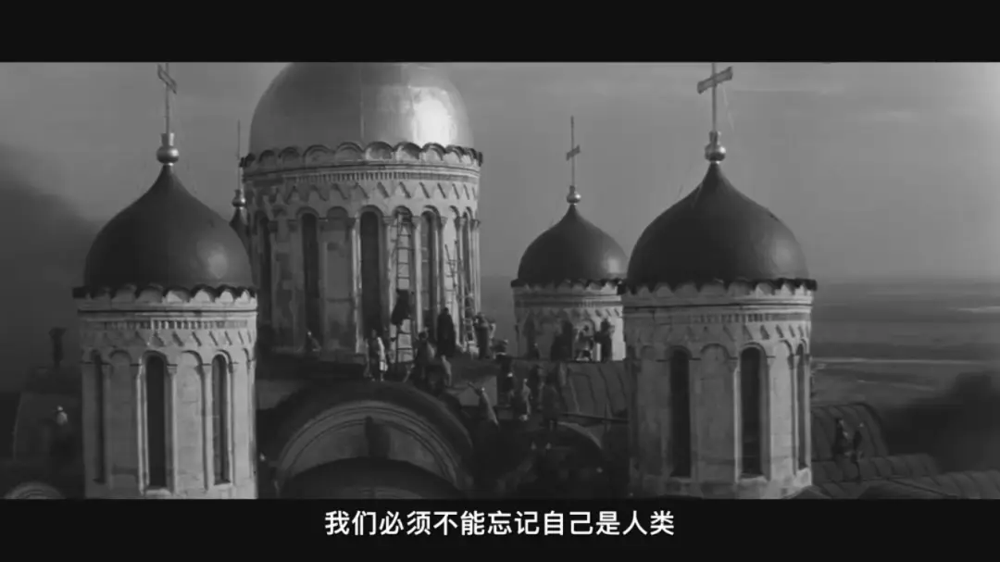
其次，塔尔科夫斯基电影中呈现的是一种信仰者的理想主义和利他主义。
纪录片中，塔尔科夫斯基对哈姆莱特的悲剧认识非常深刻，他认为哈姆莱特的悲剧不在于复仇，他真正的悲剧在于他因为想要修补那个支离破碎的年代而注定的万劫深渊。
这虽是一个悲剧，但却是塔尔科夫斯基所欣赏的理想主义，他认为人的职责是为他人服务：
这个想法如今被贬低，人们拼命想要获得权力，从而不再需要别人，还可以反过来剥削他人......
在这个世界上，人与人之间的关系只有一条准则：那就是为彼此服务，无他！
这也是塔尔科夫斯基坚持创作的内在动力，他认为当今时代的邪恶和魔鬼，是美德与上帝的缺位。
当今人类变得扭曲而痛苦，是因为爱遇到了障碍。
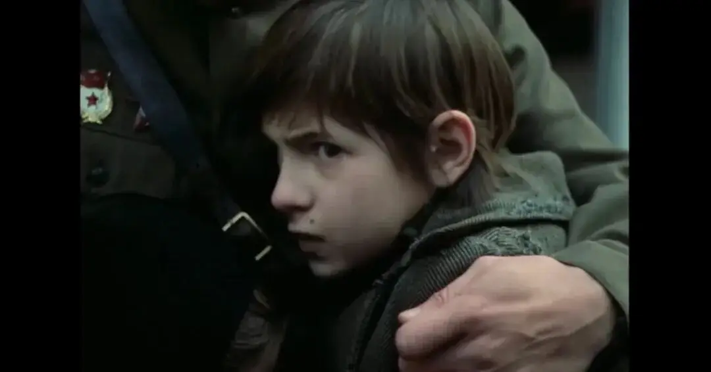
因此，在塔尔科夫斯基的艺术哲学非常强调艺术家的责任。
他主张艺术家是社会的良心，这个时代越是邪恶，艺术家就应该越是紧迫地创作，去敲打和提醒这个社会要关注灵魂和精神。
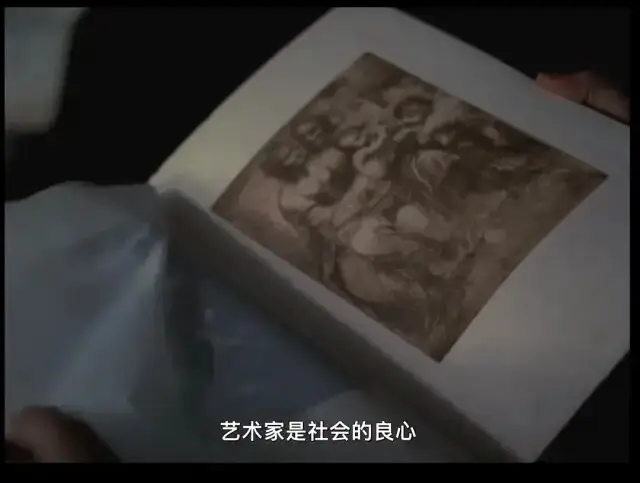
塔尔科夫斯基的一生便践行了这样的理念，在言论逼仄的苏联，老塔完成了多部思想深邃的作品。
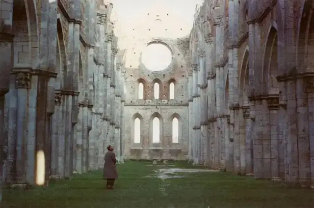
在创作《乡愁》时，更是遭到苏联当局百般阻挠，甚至他的儿子被苏联政府扣为人质。
《乡愁》完成后，塔尔科夫斯基也不得不流亡异乡。
更受打击的是，他不仅遭到了祖国的拒绝，老塔还遭遇和他合作多年的同事的背叛，他曾因参展欧洲电影节而被同事恶意指责。
可这些困难均未阻挠塔尔科夫斯基的创作，他最终怀着坚定的信念在异乡完成最后一部作品《牺牲》。
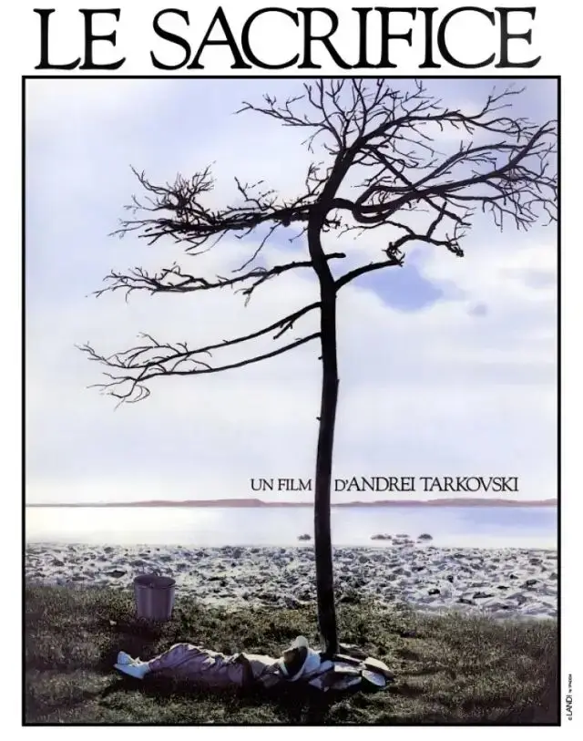
而这种坚持和勇敢均来自于塔尔科夫斯基的精神追求，他认为自由是一个人内在的精神上的自由，他与权力无关。
你可以剥夺一个人的权力，但你永远无法剥夺他的自由。
所以塔尔科夫斯基从未因为祖国舆论环境的逼仄而害怕，也未盲目迷信崇拜西方式的自由。
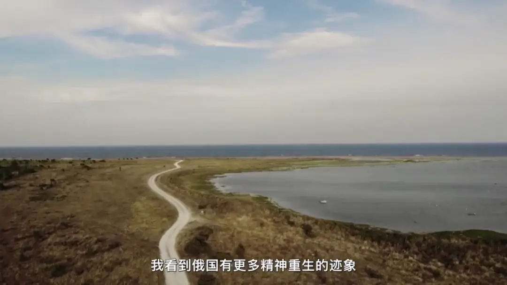
所以，塔尔科夫斯基在艺术表达和追求上是极为纯粹的，他的第一部长片《伊万的童年》其实是接手别人的一个烂尾项目。
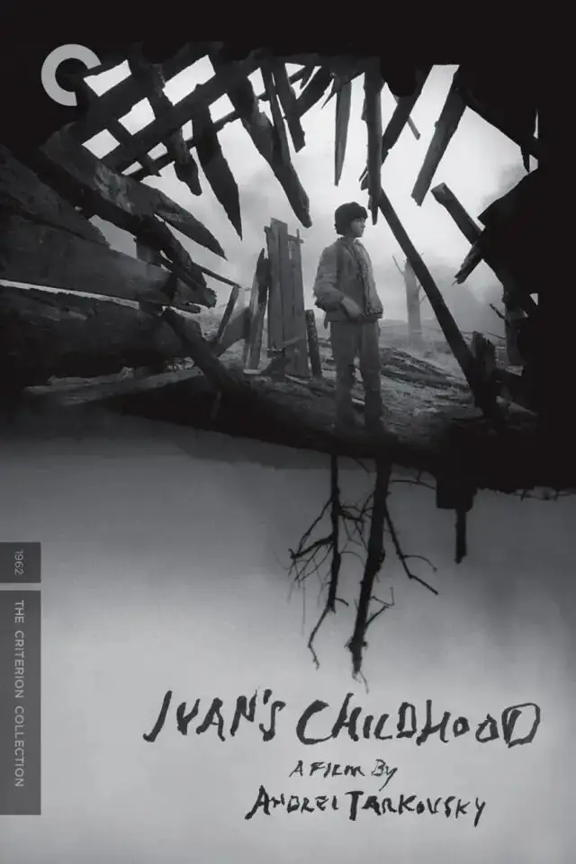
当时制作组对自己拍摄的东西非常不满意，可预算已经花了一半，于是想要再找一名导演来补救，可没有一个人愿意碰这个烫手山芋。
焦头烂额之际，他们找到了塔尔科夫斯基，塔尔科夫斯基说他愿意接，但是有一个要求，就是自己要重拍，要拥有绝对的创作自由。
一半的预算，在塔尔科夫斯基手上却变为了神奇，电影收获了第27届威尼斯电影节金狮奖。
没有创作自由，艺术就无法存在！
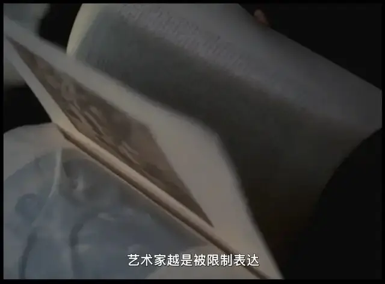
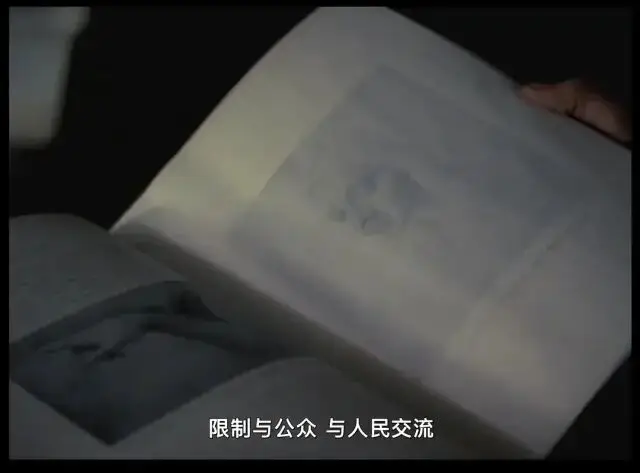
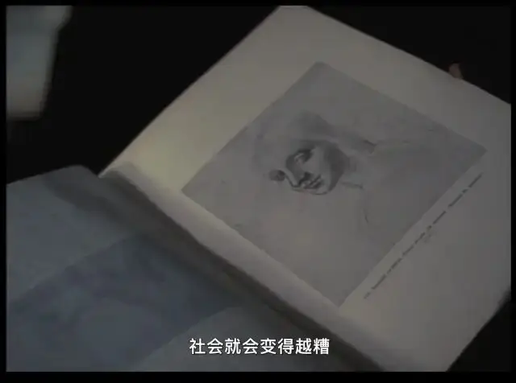
塔尔科夫斯基艺术表达的最后一个特质是从现实世界通往超验世界。
老塔的信仰及艺术思想，都将焦点放在了造物主和超验世界上。
如何触达超越性的世界，这并非易事。
而对于塔尔科夫斯基来说，祈祷和默想给了他这样的洞察力和智慧。
在他的作品中，女性和孩子是链接现实世界和另一个超验世界的纽带，尤其是小孩，他认为孩子比大人更睿智，他们尚未失去和另一个世界的联系。
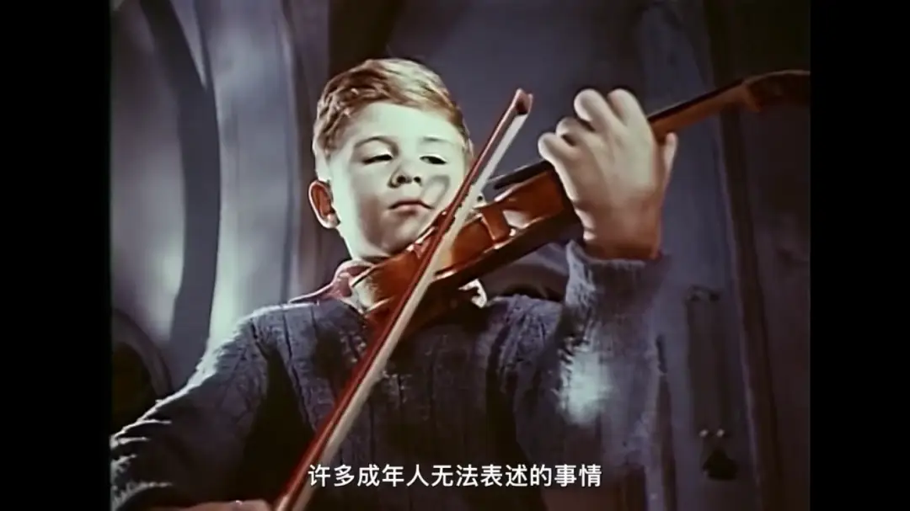
所以，老塔会将女性和孩子处理的比较模糊，用他自己的话来说，是非常不透明。
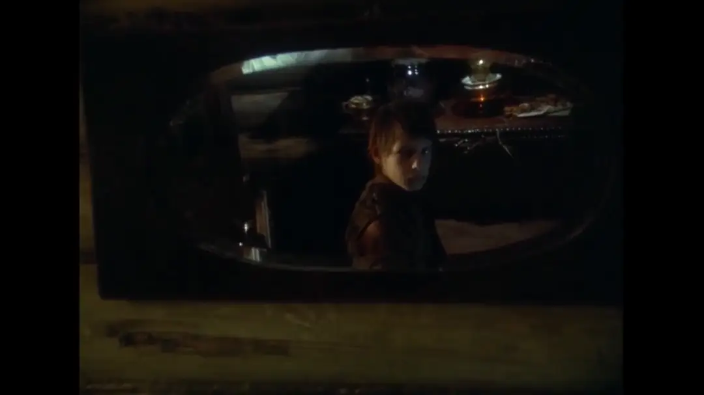
《乡愁》中的母亲具有一种神圣的安静和谦卑，会让人不由想到圣母。
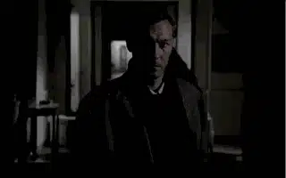
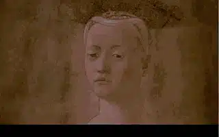
《潜行者》和《牺牲》中成人世界陷入到绝望和怀疑中，但神迹却默默地在不起眼的小孩身上发生。
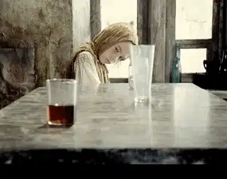
△《潜行者》中整部电影让人无助和绝望，但在电影的结尾，潜行者的孩子却可以让水杯移动，原来神迹早已在隐秘处出现
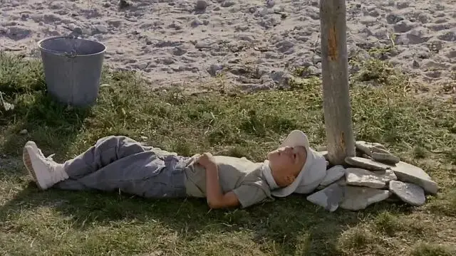
△《牺牲》的结尾，在第三次世界大战的绝望边缘，小孩子在电影中说出了唯一一句台词，便是圣经约翰福音中的第一句话：太初有道！
除了小孩和女人，无处不在的大自然也在默默地宣告着造物主的荣耀。
比如初升的太阳、八月里的飞雪以及鸟儿落在主人公的头上。
大自然会将我们从为了谋生的工作中解放出来，会让我们从繁忙中解救出来，将我们重新转化为一个人。
这种力量看似平常，如果我们细想，这背后难道不是来自造物主的恩典么。
类似的还有一些难以解释的梦境，老塔说：“在那些梦里，我们看到了亲近上帝的力量。”
除了物象，塔尔科夫斯基作品几乎都笼罩在一种羞愧、绝望的情绪中，老塔坦言，肮脏的生活有时能给予我们机会。
如果人类自认为自己全知全能，可以搞定一切，那么就不需要任何对造物主的依赖和救赎。
所以，塔尔科夫斯基的作品中刻画了很多人类的有限，比如在《索拉里斯》中，老塔便表达了人类爱的有限：
看，我爱你，但爱这种感觉，只能去经历，无法被解释。
一个人能够解释爱的概念，而你爱的都是那些可能会失去的东西，你自己 、一个女人、 一处家乡......
直到今天以前，爱之于人类是不可获得的东西
我们人类太少了，几十亿 ，一点点而已。
人类的罪性、人与人之间难以避免的疏离和冷漠、可怕的战争，这些绝望的事实都是我们通向另一个世界的桥梁。
除了这些我们不易察觉的表达方式，塔尔科夫斯基作品中都有一个圣愚般的人物，他们仿佛不属于这个世界，与这个世界格格不入。
他们的行为在正常人看来是那样的荒谬、没有意义和不现实，但在塔尔科夫斯基看来，他们做了什么并不重要，重要的是他的行为来自他的灵魂深处，来自一种与更高力量的联系。
-03- 被忽视的塔尔科夫斯基
如果我们看清楚老塔创作的精神内核，我们就会明白，他的作品就像他电影中的圣愚一般注定会在今日之时代会被误解和忽视。
对于世俗化严重的西方，虽然由天主教、基督教组成的评委多次给老塔的作品授予了天主教人道主义精神奖。
但是有很多人更看重于老塔作品的形式，而非他作品内在的精神价值。
△英格玛.伯格曼《处女泉》中的剧照，伯格曼通过主人公在狂风中摇动小树来表达对于信仰的怀疑和绝望。
△塔尔科夫斯基《牺牲》中的剧照，塔尔科夫斯基通过栽种小树来表达信仰的坚定
所以，很多评论家，有人通过视听语言去分析老塔，有人通过符号学来分析，而这些在老塔看来是非常可笑的。
在这部纪录片中，老塔也禁不住吐槽。
有一次《镜子》的放映活动，放映结束后，很多人依就议论纷纷聚在一起不肯散去。
当时，打扫影院的清洁工等着着急，有些不耐烦，“这个电影很简单，你们快散去吧。”
如此挑衅，众人问，那你到说说看。
清洁工说：很简单 ，一个男人病了，他很怕死，然后他想起了他对别人做过的很多很糟糕的事，他想要忏悔，就这么简单。
而这也的的确确是塔尔科夫斯基的原意，《镜子》就是他的一部忏悔录。
塔尔科夫斯基在纪录片中还补刀到：这些人，一如既往依旧什么都看不懂，而且随着时间的推移，他们连自己以前写的东西也会忘记。
脱离了作者本身的表达意图，又何以能完全把握作者的形式。
再比如《伊万的童年》被评论界解读为一部反战电影，而塔尔科夫斯基则认为这个评论是对自己艺术创作的负面评价，因为这部电影刻画的是战争下主人公的罪与罚。
塔尔科夫斯基的作品不仅被评论界误解，在苏联政府也曾遭遇很多恶意的解读。
比如《安德烈·卢布列夫 》表现的只是一个圣像画家因为坚持信仰而与世界格格不入，却被政府定义为反俄反历史，是一种西方式的拍摄方式。
因为电影主角非常个性化，总是在反抗集体，完全是个个人主义者。
这种解读可以说是一种政治迫害了。
而塔尔科夫斯基在中国影迷的遭遇也一样非常有意思。
我身边有两种塔尔科夫斯基的误解。
第一种是部分影迷，他们被这个欧洲顶尖电影节获奖专业户震撼，被老塔在电影史上的地位而震惊，更被“圣三位一体”的称号而感到不明觉厉。
塔尔科夫斯基成为了他们成为从影迷晋升为迷影必要跨越的高山，即使在电影中睡着了无数次，也要在朋友面前对老塔的长镜头大加赞赏。
他们将塔尔科夫斯基当做标榜自己电影鉴赏力的标签，却未对塔尔科夫斯基穷尽一生所要表达的精神世界表现出兴趣和向往。
对于这样的朋友，我觉得非常遗憾，这是一种买椟还珠的愚蠢。
第二种是部分基督徒，他们陶醉于塔尔科夫斯基作为广义基督徒在电影界取得的惊人成就，可他们对他作品表现出来的东正教思想充满警惕，总喜欢未经了解和欣赏就大放厥词，给老塔扣个异端的帽子。
事实上，当我们看到塔尔科夫斯基在作品中的那种谦卑，我们应该感到羞愧。
很多时候，有许多新教徒是极端理性主义，总是排斥任何神秘和感性，企图用教义去框定万物。
可上帝如此丰富，有谁敢说自己能够拥有全部的真理。
因此，这部纪录片是打开塔尔科夫斯基电影世界的大门，可以让我们更深地认识老塔。
最后，向大家分享一下这部作品中最让我动容的一个地方，这是塔尔科夫斯基的一段自述：
艺术是人类最无私的行为之一
艺术的意义是祈祷
这是我的祈祷（指他的作品）
如果我的祈祷能成为他人的祈祷
那我的作品也就更能靠近他人
在我看来，这是最伟大的艺术宣言，希望能成为你我的鼓励。
塔尔科夫斯基用他的作品不断地向我们提醒：人需要感知自身对造物主的依赖，如果无法感知，人就变成了动物。
希望我们能看懂塔尔科夫斯基的祈祷和对这个世界的警醒。
如果看不懂，也许我们可以从一个祈祷开始。
-END-
相关推荐
▼
《牺牲》| 这是父亲送给孩子最好的礼物
《潜行者》 | 这是全人类绝无仅有的电影了
《乡愁》 | 没有一个人能够将信仰拍的如此诗意和凝重
这里没有挑逗你眼目情欲的小鲜肉
也没有挑动你肉体情欲的段子
更没有膨胀你今生骄傲的鸡血
我们只在乎那些最质朴真诚的作品
在那里我们才能恢复真正的想象力
我们也坚信这才是我们真正需要的

ID:Six_hundred_hits
长按二维码，一键关注
【六百击】
电影评论
尽情分享朋友圈

微信二维码打赏通道